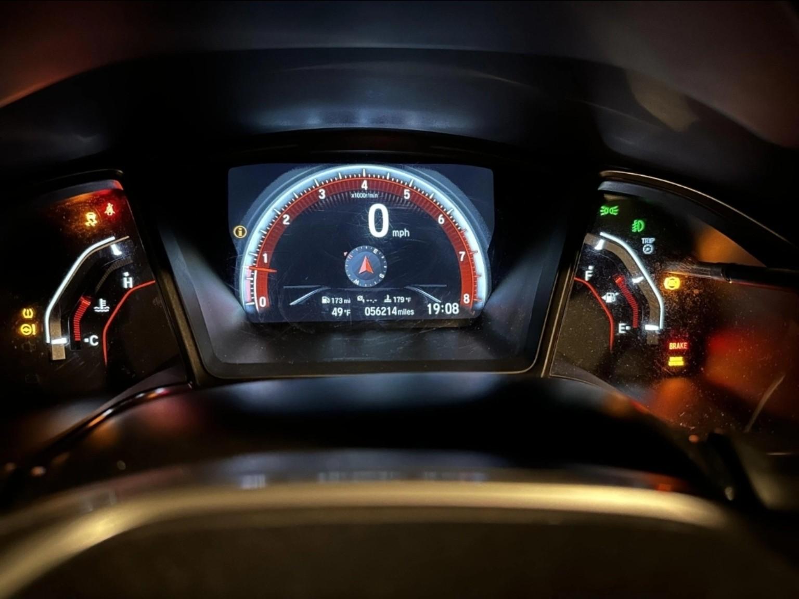

HONDA CIVIC 10TH GEN · ΕΡΓΑΣΤΗΡΙΟ ΣΑΕΚ
Πίνακας οργάνων Honda Civic 10th gen
Διάλεξε μια λυχνία, δες τι σημαίνει και ποιος είναι ο πρώτος έλεγχος. Έπειτα δοκίμασε τις γνώσεις σου στη διαγνωστική άσκηση.
47 λυχνίες · 68 μηνύματα28 εκπαιδευτικά περιστατικά56 αποφάσειςΕνδείξεις πίνακα
